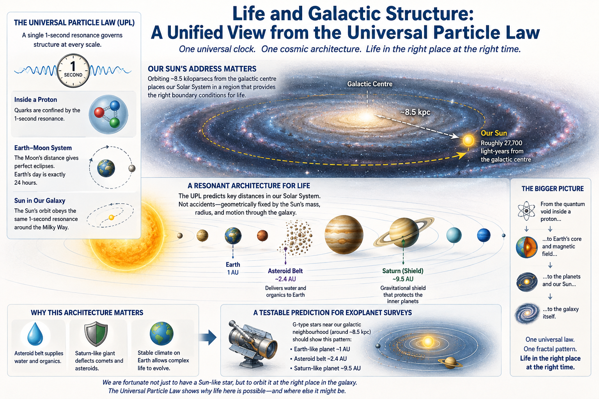
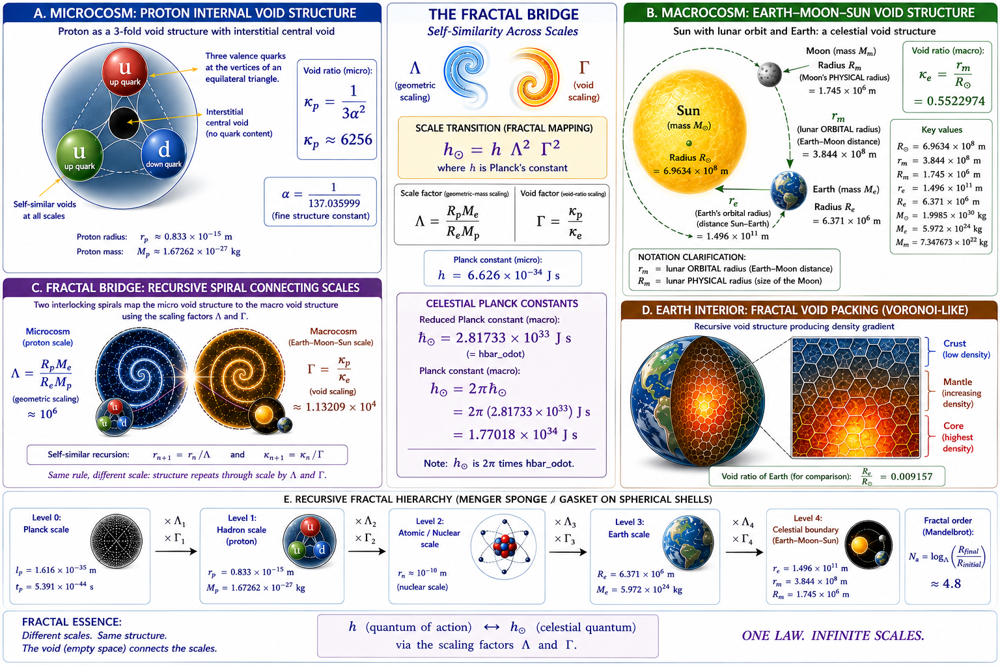
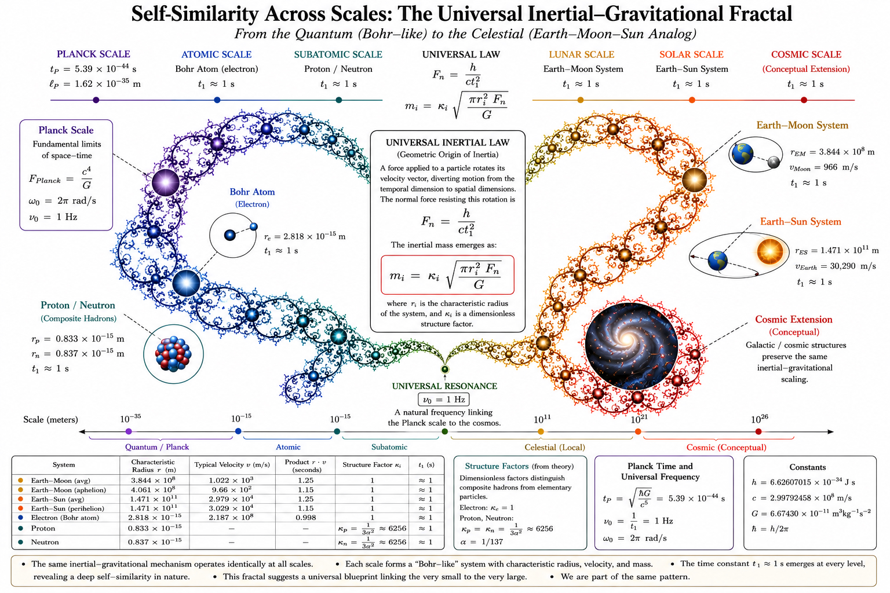

Home 2
Home 2August 24, 2026 (updated August 25, 2026, added an appendix 2)
****************************************************************************************
August 22, 2026 https://doi.org/10.5281/zenodo.22059902
***************************************************************************************
Aug 20, 2026
Life and Galactic Structure: A Unified View from the Universal Particle Law
The Universal Particle Law: A Cosmic Architecture for Life
Imagine a single, fundamental clock—a heartbeat lasting exactly one second—that echoes from the inside of a proton to the edge of the galaxy. That is the central claim of the Universal Particle Law (UPL). It proposes that mass is not a fixed, intrinsic property of matter, but a geometric resistance: when we push an object, we are literally rotating its motion out of the time dimension and into space, and the universe pushes back with a force whose strength is set by a one‑second resonance.
What makes this idea extraordinary is that this same one‑second resonance appears to govern the structure of systems at every scale—from the confinement of quarks inside a proton, to the orbit of the Moon around Earth, to the motion of our Sun around the Milky Way.
A Fractal Pattern in the Sky
When the UPL is applied to the Earth–Moon–Sun system, it predicts that the Moon must be at exactly the right distance to create a perfect solar eclipse—and that Earth’s day must be precisely 24 hours long. These are not coincidences; they are resonant “nodes” that stabilize our climate and give complex life a stable environment to evolve. The math shows that the Moon is slowly drifting away, and Earth’s rotation is slowing down, but the system is dynamically balanced so that this perfect alignment persists for the critical window during which intelligence can arise.
When the same law is applied to the Sun’s orbit around the centre of our galaxy, it predicts two more “sweet spots” in our own Solar System. The first is the asteroid belt at about 2.4 times Earth’s distance from the Sun—the region that delivered water and organic compounds to the early Earth. The second is the orbit of Saturn at about 9.5 times Earth’s distance—a massive outer planet that acts as a gravitational shield, deflecting comets and asteroids away from the inner planets. The UPL shows that these distances are not accidental; they are geometrically fixed by the Sun’s mass, radius, and motion through the galaxy.
Not Just the Star, but the Galactic Address
This leads to a profound insight for the search for life beyond our Solar System. Traditionally, astrobiologists have focused on the type of star: G‑type stars like our Sun are considered good candidates, while M‑dwarfs (red dwarfs) are problematic because their habitable zones are so close that planets become tidally locked, and F‑type stars burn out too quickly.
The UPL confirms and refines this picture—but it adds a crucial new layer: habitability is also a function of where the star lives in the galaxy. The resonant nodes that produce an asteroid belt and a Saturn‑like shield depend on the star’s orbital speed and the mass of the galaxy enclosed within its orbit. A G‑type star in the outer reaches of the Milky Way, or near the galactic centre, would have a completely different set of resonant spacings—and likely a very different planetary architecture.
In other words, we are not just fortunate to have a Sun‑like star; we are fortunate to have that star orbiting at roughly 8.5 kiloparsecs from the galactic centre, where the galactic environment provides exactly the right boundary conditions. The UPL predicts that G‑type stars in this specific galactic neighbourhood should host systems with an Earth‑like planet at 1 AU, an asteroid belt at ~2.4 AU, and a Saturn‑mass planet at ~9.5 AU.
A Testable Guide for Exoplanet Surveys
This is not a vague philosophical framework—it makes a clear, testable prediction. Future exoplanet surveys, such as those planned with the Nancy Grace Roman Space Telescope or direct‑imaging missions, can look for exactly this architecture around nearby Sun‑like stars. If the majority of such systems show this pattern, the UPL will be spectacularly confirmed. If they do not, we will learn that our own Solar System is statistically rare—a finding that would be equally profound, as it would suggest that the conditions for complex life are extraordinarily finely tuned, requiring both the right kind of star and the right kind of galactic address.
The Bigger Picture
Ultimately, this collection of papers paints a unified picture of cosmic structure: from the quantum void inside a proton, to the Earth’s core and its protective magnetic field, to the asteroid belt and outer planets, to the edge of our local group of galaxies. All of these scales are linked by the same 1‑second resonance. The second is not an arbitrary human invention, inherited from ancient Babylonian mathematics; it is a fundamental beat of the universe—a clock that synchronizes the architecture of planets, stars, and galaxies.
In this view, life is not an accidental by‑product of random chemistry, but a natural consequence of a universe whose structure is self‑similar from the very small to the very large. The same geometric law that builds protons also builds solar systems, and it does so in a way that maximizes the chances for stable, complex, intelligent life to emerge. We are not merely observers of this cosmic order; we are its resonant expression.
****************************************************************************************
August 14, 2026
For centuries, the great syntheses of physics have sought to unify the disparate realms of nature: Newton joined the heavens and the Earth; Maxwell unified electricity and magnetism; Einstein wove space, time, and gravity into a single fabric. Yet a deeper unity has remained elusive—a principle that would connect the infinitesimal world of quarks to the vast architecture of galaxies, and further, to the very chemistry that gives rise to life.
The work collected here proposes that such a unity exists, and that its signature is a single, invariant time: the second.
**************************************************************************************
August 10, 2026

Self-Similarity Across Scales From the Atomic to the Celestial
We seek to develop a universal particle law, and seek through it, to find a connection of such a microscale to a celestial scale involving the Earth/Moon/Sun system. We do this by developing a quantum analog of the Bohr atom for the Earth/Moon/Sun system.
The Fractal Nature of the Theory Illustrated (Aug 11 2026)
***************************************************************************************
August 5, 2026The One-Second Law: Unifying the Earth, the Moon, and the Quantum Vacuum
****************************************************************************************
August 2, 2026Preface
One of the Author’s findings is that the second appears as a natural constant on the scale of atoms, but perhaps as well on cosmological scales in the Earth/Moon/Sun System (Appendix 3, Appendix 4). Ultimately, we got the second from the Egyptian 24 hour day, and the Sumerian base 60 counting (Appendix 1). The question continuously arises, as written in the paper: “These two independent convergences—one cosmic, one quantum—set the stage for the central question: “How did the seed get planted?” The fact that the second is a natural constant implies that the historical development was not a random walk but a deterministic discovery process. We now formalize that process.”
On the one hand, the movie “2001: A Space Odyssey” suggested there has been a presence giving us nudges since the dawn of humans. This is embodied in the films monolith, put here to do as such. On the other hand Graham Hancock suggests there was an ancient lost civilization that predated Sumer and ancient Egypt. He suggests they suffered a cataclysm and its survivors went through the world to spread their knowledge in ancient times to these first civilizations. Thirdly, the seeds could have arisen because 24 and 60 are highly composite. We see how two ancient civilizations — Sumer and India — independently developed measuring time with these two numbers, just in different ways, but that both give the same 1440 minutes per day (Appendix 2). The recent discovery of Gobeckli Tepe has pushed back the date 6000 years for people building megalithic structures to the last part of the last ice age. This rewrites archaeology texts because it was believed that ice age nomads did not do such things. That, such structures came after the ice age, with agriculture, agriculture giving birth to organized religions. Wanderer, hunter-gather’s didn’t cooperate and plan to build such things, the T-shaped pillars with images bordering on early writing long before it should be there. This turns everything upside down, that organized religion — the pillars as a sacred meeting place — gave birth to agriculture. This, Hancock says, might be evidence for a long lost civilization. It would be a good science fiction movie: Was ancient Egypt seeded with 24 and Sumer with 60 by an outside force so that ancient Greece could synthesize them into the equinoctial hour by way of getting this information from the Babylonians.?In this paper we turn the Asimovian science fiction idea of psyhcohistory — the fictional method of predicting the human unfolding of history with mathematics — into a formalized mathematics. We introduce the notion of a seed that evolves with time. Having done this we are equipped to look for seed imprints in human history that could come from extraterrestrials giving us an evolutionary nudge as the monolith did in the movie “2001: A Space Odyssey”.
******************************************************************************************
July 26, 2026The complete project to date.
*******************************************************************************************
July 25, 2026The division of the day into 24 hours, 60 minutes, and 60 seconds is so fundamental to modern life that we rarely question its origins. Standard historical accounts credit the ancient Egyptians with the 24-hour day, the Babylonians with the base-60 system of minutes and seconds, and the Greeks with synthesizing these into the system we use today.
However, this narrative overlooks a remarkable parallel: the ancient Indians independently developed a system dividing the day into 60 ghatis of 24 minutes each, yielding exactly the same total of 1,440 minutes per day. This paper argues that 1,440 is not merely a cultural artifact but a mathematical inevitability—a constant that emerges whenever any advanced civilization divides the day using the most practical, highly composite numbers available. The minute, defined as 1/1,440th of a day, represents a case of convergent mathematical evolution, independently discovered by the Sumerians and the Indians, and later synthesized by the Greeks into the system we use today.
******************************************************************************************
July 18, 2026The Geometry of Habitable Worlds
Knowth Kerbstone 15 in the Brú na Bóinne complex has long been interpreted as a prehistoric solar calendar. However, its apparent 16-month structure does not correspond to any natural terrestrial cycle. We propose an alternative hypothesis: the carving encodes the calendar of a habitable planet orbiting an F8V star, for which we have derived a 400-day year composed of 16 months of 25 days. The planet's day length of 30 hours yields exactly 108,000 seconds per day—a number that appears prominently in Vedic literature. This convergence of Irish megalithic art, Vedic sacred numbers, and exoplanetary physics suggests either a remarkable coincidence or the residue of an ancient, lost astronomical tradition. We discuss the implications for directed panspermia and the possibility that Earth's Neolithic monuments are not merely terrestrial observatories, but interstellar beacons.
******************************************************************************************
July 14, 2026 (Updated July 17 2026)How The Universe Converges On One Second At Atomic And Celestial Scales
A short day can have benefits for intelligent life, but this results in a short night that can reduce certain benefits given by a longer night. Conversely, a long day can have benefits for intelligent life, but this results in a long night that can reduce certain benefits. This is a differential equation that pits day against night, and our 24 hour day may be its solution. The author first presents his rough outline of a discovery of 1-second as a natural unit in planetary science that goes beyond its apparent arbitrary development arising ultimately from the ancient Egyptians, and Sumerians and their base 24 and base 60 counting. Since this discovery is based on the rotation period of the earth being about 24 hours in its current evolved form, it became necessary to explore the optimal rotation period by pitting night against day in a differential equation developed with deepseek AI. This will constitute the second paper. The next paper looks at how we can form a planetary habitability wave function. Since the author also found 1-second to be a possible invariant that describes subatomic particles — the proton, electron, and neutron — that will be paper 4. Then we look at a Deep Seek evaluation of the Universal Particle Equation in terms of Quantum Field Theory. Finally, we outline a test for the 1 Hz resonance that the Universal Particle Equation Predicts in a torsion pendulum.
***************************************************************************************
July 11, 2026The Vault Opens at Dawn: How a Second, an Eclipse, and a '1' Herald the Star-Child
******************************************************************************************
July 3, 2026In light of the apparent impossibility of faster than light travel, we realize that two paths forward emerge from this, and from the limits of formalism.
*****************************************************************************************
July 1, 2026
Click Here to Read: The Heartbeat of the Vacuum
Historical Fiction/Science Fiction
****************************************************************************************
June 3, 2026
******************************************************************************************
June 2, 2026On the 1 Hz “Noise” and the Case for a Torsion Pendulum Test of the Temporal Invariant
So, in other words, I was looking for the best way to test my theory with an experiment to show that there is a 1 Hz resonance, and that turned out to be with a torsion pendulum. As it would turn out torsion pendulums do have a spike at 1 Hz that they have always attributed to "noise". They have several theories for causes of this noise. So I designed an experiment to build a torsion pendulum that would circumvent this noise according to the theories, to see if the 1 Hz peak would still be there. The above is a link to the paper for that design.
The claim of a universal 1second invariant \(\tau_0 = 1\,\text{s}\) and a concomitant normal force \(F_n = h/(c\tau_0^2)\) implies that any dynamical system coupling to the resistance of temporal rotation should exhibit an anomalous resonant response at exactly \(\omega_0 = 2\pi\,\text{rad/s}\) (\(f_0 = 1\,\text{Hz}\)). Torsion pendulums have been used in precision experiments for centuries, but a systematic search for a sharp, unexplained peak at 1 Hz has never been performed because such a peak is conventionally dismissed as environmental noise or electronic artifact. This paper reviews the known sources of 1 Hz contamination (Nyquist aliasing, pendulum cross coupling, microseisms, clock feedthrough) and shows that none of them can account for a persistent, amplitude insensitive, and drive phase locked peak that survives standard control tests. We propose a dedicated torsion pendulum experiment with oversampling, analog antialiasing filtering, and a set of falsifiable controls. If the predicted 1 Hz resonance is observed, it would provide the first direct experimental evidence for the temporal invariant; its absence, after proper artifact elimination, would falsify the central prediction of the theory.
******************************************************************************************
May 31, 2026 (Updated July 24, 2026)Having now explained the 1/(3alpha^2) coupling constant for the proton and neutron, the Universal Particle Equation is on much stronger ground. With that I have more hope for the warp drive solution of this theory for inertia as measured by mass.
The central claim of this work is simple: there exists a universal normal force \(F_n = h/(c \cdot 1\,\text{s}^2)\) that resists any rotation of a particle’s four‑velocity from the temporal dimension into space. What we call mass is the quantitative measure of that resistance. From this single postulate, we derive a universal particle equation.
*****************************************************************************************
May 30, 2026A Consistent Scale for Habitable Rocky Planets: Radius, Mass, and Possible Implications
Inspired by the yogic significance of the number 108 and the approximate coincidence that the solar diameter is 108 times Earth’s diameter while the SunEarth distance is 108 solar diameters, a simple geometric relation is proposed: \( R_{\text{planet}} = 2 R_{\star}^2 / r_{\text{hab}} \). When combined with the inverse square law for habitable zone distance, \( r_{\text{hab}} = \sqrt{L_{\star}/L_{\odot}} \) AU, the predicted radius of a habitable planet remains nearly constant (within ~30% of Earth’s radius) for main sequence stars from F5V to K5V. Extending the same physical reasoning to planet mass, we derive \( M_{\text{planet}} = M_{\star} (R_{\star}/r_{\text{hab}})^2 \cdot i \), where \( i \) is a composition index that depends on spectral type (0.15 for G2V, 0.25 for K5V). The mass formula correctly reproduces Earth’s mass and the estimated mass of Kepler-442b (2.36 M⊕). The near exact agreement for two widely separated systems suggests that habitable rocky planets follow a predictable formation track. This predictability may have implications for any longterm strategy of interstellar seeding: target planets can be identified from host star properties alone. We discuss the possibility that Earth and Kepler-442b could be part of a deliberate galactic garden, whether as seeders or as seeded worlds.
***************************************************************************************
May 12, 2026
(Updated May 25, 2026)Solving the Terminal Blueshift Catastrophe with the 2π Hz Resonance
Abstract. One of the most severe objections to the Alcubierre warp drive is the terminal blueshift catastrophe (Puthoff et al.): upon deceleration, the bubble releases all the energy of sweptup interstellar matter as a devastating gammaray burst. We show that the universal \(2\pi\) Hz resonance – derived from the normal force \(F_n = h/(c\cdot 1\,\text{s}^2)\) – naturally turns the bubble wall into a damped, driven harmonic oscillator. At resonance, incoming energy is continuously radiated away as gravitational waves at 1 Hz, preventing accumulation. The result is a stable, selflimiting bubble that does not become a weapon.
******************************************************************************************
May 12, 2026 (Updated May 25, 2026)One of the most serious objections to the Alcubierre warp drive—championed most thoroughly by Hal Puthoff—is that upon deceleration, a warp bubble would release all the pent-up, blue shifted energy of accumulated interstellar matter, effectively annihilating the destination star system. Mainstream rebuttals, such as those by Jack Sarfatti, argue that Puthoff's analysis is incomplete, suggesting the bubble could be made "transparent" using exotic materials. However, my 1‑Second Invariant theory offers a third, more powerful resolution: the bubble resolves the weapon problem not by avoidance, but by engineering.
The universal 2π Hz resonance doesn't just stabilize the bubble; it transforms it into a damped harmonic oscillator coupled to the quantum vacuum. As the bubble sweeps up matter and radiation, the oscillating bubble wall absorbs the incoming energy, converting it into a harmless, low‑energy gravitational wave at exactly 1 Hz. In the final stage of deceleration, the bubble releases no destructive burst because the accumulated energy has already been radiated away over the course of the journey.
This framework turns Puthoff's greatest objection into a testable prediction: if advanced entities are using metric engineering, their deceleration should produce a characteristic 1 Hz gravitational wave signature —not a gamma-ray burst. The question is not whether Puthoff or Sarfatti is correct, but whether we have the courage to test both their ideas and mine.
*************************************************************************************
May 2, 2026 Warp Drive Paper 2
By David E. Blackwell and Ian Beardsley
We present an exploratory three-dimensional numerical simulation built directly on the unified framework introduced in Informa- tional Geometry, the 2π-Hz Resonance, and Warp-Drive Dynamics Without Exotic Mat- ter. This follow-up study takes the theo- retical construction into a working computa- tional model, evolving the informational field , the asymmetric shift-vector geometry , and the bubble’s external-frame trajec- tory on a fully discretized 3D lattice. Within the limits of the present grid and runtime, the system exhibits coherent behavior: the bubble maintains its imposed shape, the in- formational energy remains strictly positive, and the dynamics settle into the 2 -Hz curvature mode predicted by the ODIM-U/Beardsley synthesis. The simulation demonstrates that the uni- fied framework can support stable, positive- energy bubble-like configurations undergoing coherent translation at an imposed external- frame velocity of 5 , while all local physics remain sublumi- nal. The activation phase produces a fi- nite power surge of order 10 – 20 MW, after which the system damps rapidly into a near-zero steady-state power regime gov- erned by the informational resonance. Ap- parent energy-condition violations do not arise; when viewed in the extended informa- tional manifold, the bubble follows an ordi- nary geodesic and requires no exotic matter. We conclude with a conceptual engineer- ing analogue that maps the simulation pa- rameters to laboratory-scale components, in- tended as a guide for future experimental or computational prototypes. This work repre- sents an initial numerical exploration of in- formational warp-bubble dynamics and es- tablishes the foundation for longer, higher- resolution, and fully coupled 3+1 studies to follow.
**************************************************************************************
April 28, 2026 Warp Drive Paper 1
By David E. Blackwell and Ian Beardsley
Informational Geometry, the 2π-Hz Resonance, and Warp-Drive Dynamics Without Exotic Matter
We present a unified framework combining Beardsley’s invariant-based warp-drive resonance with Blackwell’s ODIM-U informational metric. Beardsley’s temporal invariant τ0 = 1 s and force constant Fn = hc/τ02 together imply a natural angular frequency ω0 = 2π/τ0 = 2π Hz. We show that this resonance arises as a curvature eigenmode of an informational metric constructed within the ODIM- U framework. The radius field Rμ, originally introduced as a geometric warp-bubble descriptor, is promoted to an informational coordinate IR. Small oscillations in this coordinate satisfy d2(δIR)/dτ2 + ω02 δIR = 0, providing a purely geometric derivation of the warp-drive resonance without exotic matter. We extend the construction to the shift vector Ni of a warp metric and demonstrate that bubble dynamics follow geodesics in an extended configuration space (xμ , Ia). This produces apparent super-efficiency while preserving local causality. A complete variational formulation is presented, and the unified theory suggests a concrete simulation architecture for numerical exploration of warp- bubble dynamics.
Abstract. The universal particle equation predicts a fundamental spacetime resonance at angular frequency \(\omega_0 = 2\pi\,\text{Hz}\) (period ). We show that this frequency matches the natural oscillatory mode of the quantum vacuum when coupled to a moving spacetime boundary. By driving a warp bubble’s shift vector at , the bubble wall acts as a dynamical Casimir oscillator, extracting real photons from vacuum fluctuations. The extracted energy can sustain the warp bubble, eliminating the need for onboard fuel or exotic matter. This turns the warp drive into a self-resonant system powered by zero-point energy.
Abstract. The discovery that a universal normal force \(F_n = h/(c\cdot 1\,\text{s}^2)\) underlies the masses of the proton, neutron, and electron—and that the same 1second invariant appears throughout the solar system, in ancient metrology, and in monumental architecture—invites a fundamental rethinking of gravity. In the standard relativistic picture, force emerges from mass; here we explore the inverse: mass emerges from force, and gravity may be a manifestation of the temporal dimension’s resistance to rotation. Three possibilities are outlined, followed by a fourth new possibility: artificial gravity via resonant time axis tilting.
Abstract. The universal particle equation unifies the quantum (\(h\)) and gravitational (\(G\)) domains through a universal normal force \(F_n = h/(c \cdot 1\,\text{s}^2)\). This provides a quantum gravitational clock with period exactly one second, accessible anywhere in the universe. We show that this invariant can eliminate the classical communication bottleneck in quantum teleportation, enabling deterministic teleportation without light-limited signaling. The result is an Asimovian hyper-relay – instantaneous communication between distant points, bypassing the speed of light lag. While this does not violate causality, it offers a revolutionary method for realtime interstellar conversation.
Abstract. Matter-antimatter annihilation offers the highest energy density of any known reaction, yet practical antimatter storage and controlled thrust remain unsolved. The universal particle equation introduces a fundamental resonance at \(2\pi\) Hz (period \(1\) second) arising from the normal force \(F_n = h/(c\cdot1\,\text{s}^2)\). We show that this resonance can stabilize Penning-type traps, allowing orders of magnitude higher antimatter densities, and can pulse the annihilation products into a directed exhaust. The result is a feasible, near-term enhancement to antimatter propulsion, grounded in testable physics.
*********************************************************************************
April 4,2026Setting The Record Straight On The One Second Invariant And The Universal Particle Equation
I have now become hesitant about collaborating on projects with author’s who have theories that can use my work. My work, that of Ian Beardsley, has been used in conjunction with work by Oleg Evdokimov (Олег Евдокимов) in his Ontology of the Fundamental Network theory (OFN), in three joint papers authored by myself and Evdokimov. The way my work eventually becomes credited to Evdokimov and Beardsley instead of to Beardsley, is as follows: The first paper uses my work, and my work is cited in that paper by referring to papers I wrote before the collaboration. But what happens, is when we collaborate on a second paper together, and my equations are used, they are now cited by referring to the first collaboration by Evdokimov and Beardsley, instead of referring to my papers that preceded that collaboration. After having collaborated on three such papers together, my original work becomes lost to a series of links to our joint papers where only the first paper directly credits me for my work. This starts to become worrisome when Evdokimov starts to write papers where I am not coauthor and cites my equations not by refereeing to my original papers on the subject, but to our later collaborations. The result is much work that should be credited to Beardsley becomes credited to Evdokimov and Beardsley. It is the purpose of this paper to set straight that the one second invariant, its associated universal particle equation, the theory for mass generation, and the normal force Fn associated with it solely originated with me (in earlier papers by Ian Beardsley). I am a firm believer that a person should be properly credited for their work.
*****************************************************************************************
March 11, 2026A Quantum Analog For The Solar System
We find if consider the evolved state of the Solar System, that its quantum analog to the Bohr atom is based on a characteristic time of one-second and the Earth's Moon as the defining metric.
*****************************************************************************************
March 10, 2026 (Updated March 14, 2026)Updated April 7, 2026
A Proposal For A Universal Particle Equation
A Normal force F_n=h/(ct_1^2) where t_1=1\text{ second}, which we suggest is Lorentz invariant, is introduced that determines a master equation for the proton, neutron, and electron, a kind of Universal Particle Equation. It is suggested that when we push on a particle we rotate some of its temporal velocity into spacial velocity and resistance to this rotation is experienced as the normal force pushing back creating inertia that we experience as mass.
**************************************************************************************
March 3, 2026We present a systematic derivation of fundamental physical constants from the geometry of the static Ontological Fundamental Network (OFN). In this framework, constants are not free parameters but geometric invariants emerging from the net- work’s structure. From a small set of topological principles — vertex degree k= 4, the golden ratio ϕ= (√5−1)/2, and the reading process parameters — we derive...
****************************************************************************************
February 11, 2026Conceptual basis. The Ontology of the Fundamental Network (OFN) postu- lates that reality is a static four-dimensional spinor network Ω. Dynamics and time emerge as an iterative reading process of this network.
Cosmic knots are defined as topologically protected configurations in Ω, cor- responding to stable elementary particles. The connectivity parameter σ = β/α characterizes the reading regime.
Synthesis with particle laws. We incorporate Ian’s empirically-derived uni- versal law for particle timescales into OFN. The dimensionless parameter κi is reinterpreted as inverse of the maximum number of type-i particles that can be fully quantum entangled in a single reading act. For electrons, κe = 1/(2π) ≈0.159 implies a fundamental limit of∼6 electrons for maximal multipartite entanglement.
****************************************************************************************
January 18, 2026 (Updated Version) By Oleg Evdokimov, and Ian Beardsley https://doi.org/10.5281/zenodo.18253480Contemporary physics stands at a crossroads, confronted by a series of profound disconnects that resist explanation within established, reductionist frameworks. Three such disconnects, spanning scales from the quantum to the cosmic and the cognitive, present a particularly compelling puzzle:
****************************************************************************************
January 15, 2026 By Kunal Kishor Verma and Ian BeardsleyWe propose that Nature may be the manifestation of an infinite regress of models, where every mathematical description of reality inevitably generates a higher-order transformation that escapes closure. Each model MMM of Nature evokes another, T(M)T(M)T(M), that transcends it, yielding a limitless recursion. This process defines existence itself: a continual emergence of structure through self-referential regression. Building upon the Timeless Energy Principle (TEP)—which interprets the universe as a self-transforming, a temporal energetic continuum—we reformulate existence as the collapse of infinite abstraction.
December 19, 2025 (Updated Jan 2, 2026)Click here to read The Geometric Nature of Kunal Kishor Verma’s Infinitely Self-Referential Field
***************************************************************************************
Oct 25, 2025Having found that a solution to the Solar System exists that is similar in form to the solution for the hydrogen atom with Schrödinger wave equation we apply it to a star system with a candidate Earth-like planet around a Sun-like star (G-type, main sequence). Earth-like in that it could be on the order of Earth-size and mass, is in the star’s habitable zone, and could be terrestrial and rocky with water. The star is KOI-4878 in the constellation Draco, about 1,120 light years distant. We find our solution has a characteristic time of about 1 second. Also developed is a theory for protons, electrons, and neutrons that has a characteristic time of 1-second as well. As such we say there is a 1-second time invariance across scales from the microcosmos to the macrocosmos. We will see that star systems from larger, more luminous stars like spectral type FV, to medium luminosity stars (GV stars) like the Sun (G2V) to less luminous stars, KV stars, come in line with the characteristic time of one second for the proton, electron, and neutron, around GV five stars, like the Sun. This equivalence may be a condition for optimal habitability of a star system.
I had tried to apply the Schrödinger wave equation to the protoplanetary disc to see if it would predict the orbits of the planets, but it occurs to me, since the solutions are analogous to those of the electron around the proton in the hydrogen atom, and the electron and proton did not form from a protoatomic cloud, that really I shouldn't pursue that. That since gravity is an inverse square field like electric fields of the proton and electron, that the analogous equations for the planets are just nodes where planets can exist from the quantization of gravity. Here we find the nodes match with the solar system if gravity is quantized by the Earth's moon, and a basis unit of one second.
**************************************************************************************
Click here to read Does A Prebiotic Path To Life Exist?
If you have read my work in astronomy theories, you know it provides a theory that applies to the physical problem of habitable planets and star systems in general, so, naturally I am interested in the biological problem of a prebiotic path to life, even though I am not a biologist. Luckily I can read the textbooks on astrobiology (also called exobiology) which frames the question of life not just in terms of the Earth, but in terms of star systems in general, and I can read them because with training in physics I know enough chemistry to follow it, biology mostly being chemistry. Here is what I found the main stumbling blocks were, with the major ones seeming to be in a lack of phosphorus on Earth, followed by Chat GPT’s analysis of these paragraphs..."
***************************************************************************************